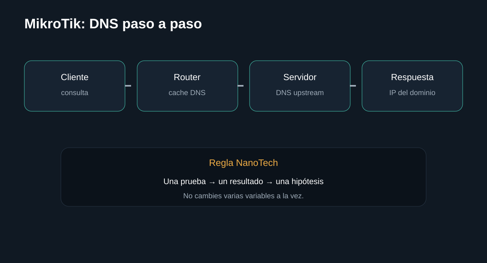
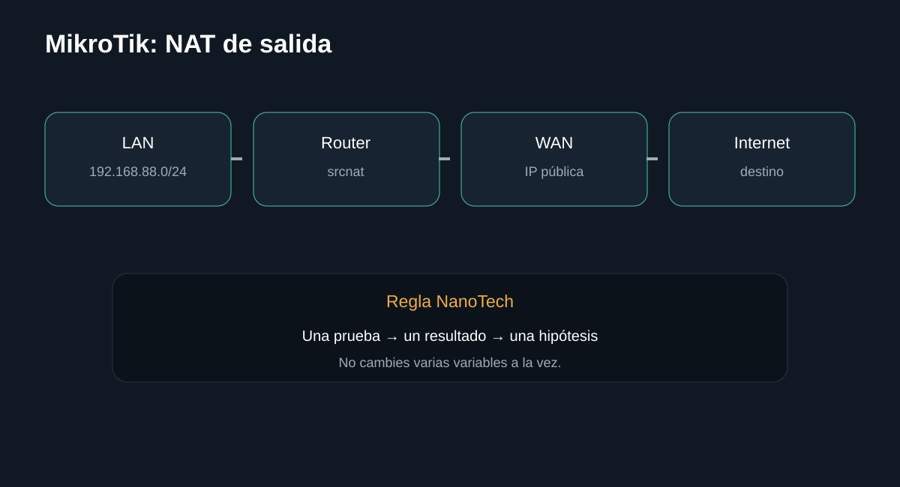
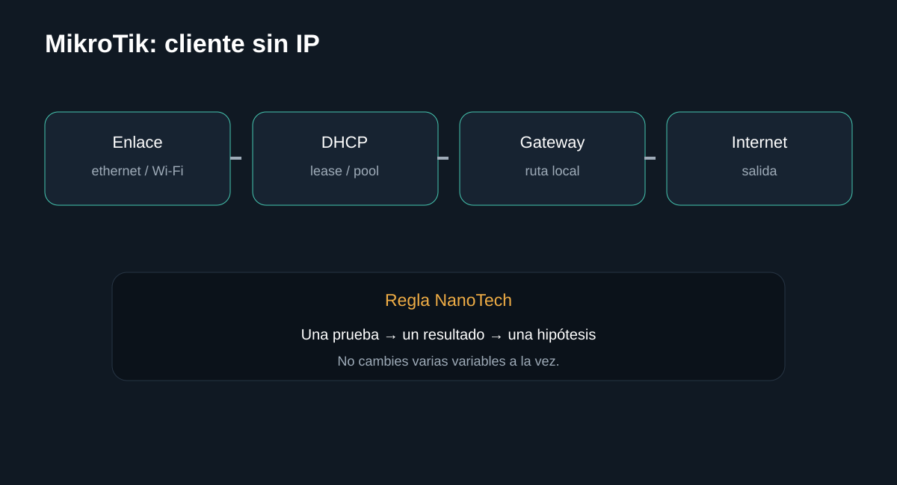

Introducción

Separa un fallo de DNS de un fallo de Internet y configura el router como caché solo cuando sea necesario. La guía busca que puedas separar causas antes de sustituir componentes.
Antes de empezar: seguridad
Desconecta el equipo cuando corresponda y no realices mediciones peligrosas sin formación e instrumental. En baterías, fuentes y placas, detén el procedimiento si detectas daño físico, líquido, olor extraño o calor anormal.
- Documenta el estado inicial.
- Haz una sola modificación cada vez.
- Conserva tornillos, cables y configuración original.
Herramientas
1. Probar IP pública
Si una IP pública responde, ya tienes evidencia de conectividad IP.

/ping 1.1.1.1 count=5/ip route print detailPrueba de conectividad hacia Internet usando una IP publica conocida (Cloudflare), sin depender del DNS. Si responde con 0% de perdida, el problema NO es de ruteo o de Internet, sino probablemente de DNS. Lista las rutas que el router conoce. Para salir a Internet debe existir una ruta "0.0.0.0/0" (ruta por defecto); si no aparece, el router no sabe hacia donde mandar el trafico que no es de su propia red.
2. Probar dominio
Una consulta de dominio permite aislar DNS.
/resolve example.com/ip dns printPide al router que resuelva un nombre de dominio a una direccion IP usando el DNS configurado. Si esto falla pero el ping por IP funciona, el problema es especificamente de DNS, no de conectividad. Muestra los servidores DNS configurados en el router y si tiene habilitado el modo "allow-remote-requests" para servir de DNS a los clientes.
3. Configurar servidores DNS
Define servidores DNS apropiados para tu entorno.
/ip dns set servers=1.1.1.1,8.8.8.8 allow-remote-requests=yes
/ip dhcp-server network set [find address="192.168.88.0/24"] dns-server=192.168.88.1/ip dns print
/ip dhcp-server network print detailConfigura que servidores DNS usara el router y le permite responder consultas DNS de los clientes de la LAN ("allow-remote-requests=yes" es necesario si quieres que el router sea el DNS de tu red). Muestra los servidores DNS configurados en el router y si tiene habilitado el modo "allow-remote-requests" para servir de DNS a los clientes.
Qué hacer
- Configura servidores DNS.
- Evita habilitar consultas remotas si no necesitas que el router atienda clientes.
- Si habilitas el servicio para la LAN, limita el acceso con firewall.
Registra el resultado antes de continuar.
InterpretaciónDefine servidores DNS apropiados para tu entorno.
4. Validar desde un cliente
Confirma que DHCP entrega DNS correcto.

/resolve example.com
/ping 1.1.1.1 count=5/ip dhcp-server lease print detailPide al router que resuelva un nombre de dominio a una direccion IP usando el DNS configurado. Si esto falla pero el ping por IP funciona, el problema es especificamente de DNS, no de conectividad. Lista las direcciones IP actualmente entregadas a clientes (leases). Si el equipo del cliente aparece con estado "bound", el DHCP esta funcionando de punta a punta.
Qué hacer
- Renueva lease.
- Comprueba servidores DNS recibidos.
- Prueba varios dominios.
Registra el resultado antes de continuar.
InterpretaciónConfirma que DHCP entrega DNS correcto.
Diagnóstico final
Fuentes y notas
La documentación oficial de RouterOS describe DNS como resolución de nombres y permite que el router actúe como caché para clientes cuando allow-remote-requests está habilitado. Si lo habilitas, protege el acceso al puerto 53 desde Internet.